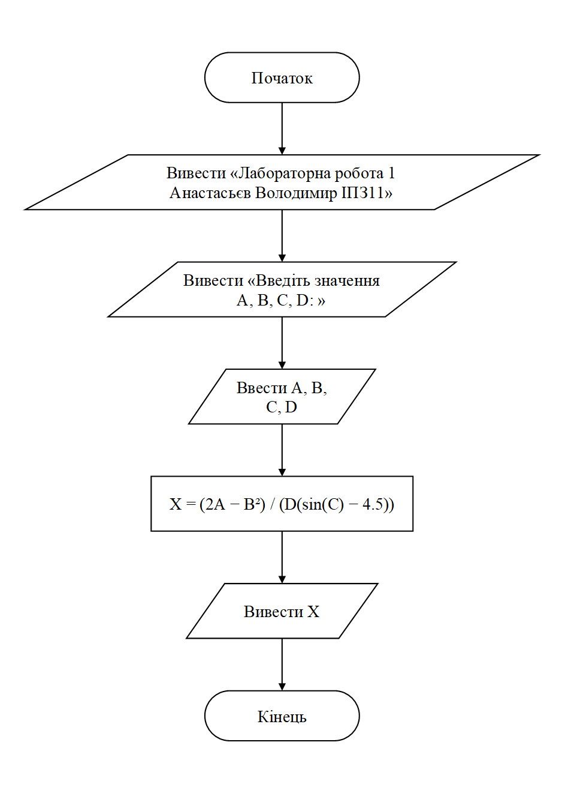
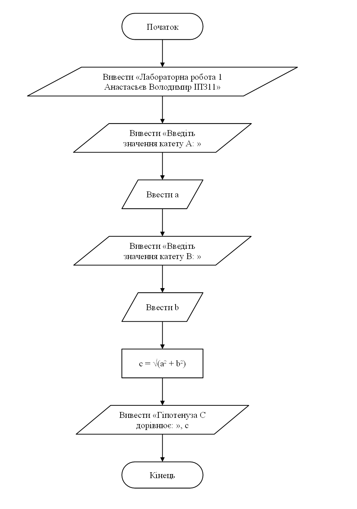
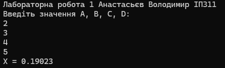
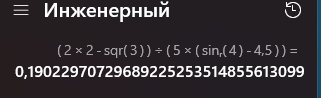
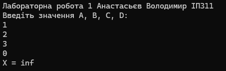
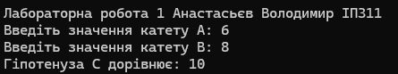
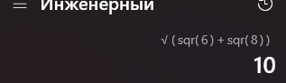

Лабораторна робота · 01
Лабораторна робота 1
Умова завдань
Завдання 1
За даними, що введені з клавіатури в оперативну пам’ять, визначити значення виразу, використовуючи математичні функції, і вивести результат на екран. Довільні значення A, B, C, D ввести з клавіатури.
Завдання 2
Обчислити гіпотенузу C прямокутного трикутника за катетами A та B, значення яких ввести з клавіатури.
Аналіз завдань
Завдання 1
Для введення значень A, B, C та D використовується cin, після чого виконується обчислення за заданим виразом. Результат X виводиться за допомогою cout.
Завдання 2
З клавіатури вводяться катети A та B, після чого гіпотенуза C обчислюється за теоремою Піфагора: C² = A² + B².
Блок-схеми завдань


Коди програм
Завдання 1
#include <iostream>
#include <windows.h>
#include <cmath>
using namespace std;
int main()
{
SetConsoleOutputCP(1251);
SetConsoleCP(1251);
cout << "Лабораторна робота 1 Анастасьєв Володимир ІПЗ11" << endl;
float A, B, C, D, X;
cout << "Введіть значення А, В, С, D: " << endl;
cin >> A >> B >> C >> D;
X = (2 * A - pow(B, 2)) / (D * (sin(C) - 4.5));
cout << "X = " << X << endl;
}Завдання 2
#include <iostream>
#include <windows.h>
#include <cmath>
using namespace std;
int main()
{
SetConsoleOutputCP(1251);
SetConsoleCP(1251);
cout << "Лабораторна робота 1 Анастасьєв Володимир ІПЗ11" << endl;
float a, b, c;
cout << "Введіть значення катету А: ";
cin >> a;
cout << "Введіть значення катету B: ";
cin >> b;
c = sqrt(a * a + b * b);
cout << "Гіпотенуза C дорівнює: " << c;
}Перевірка розрахунків





Висновки
У ході виконання лабораторної роботи було опановано побудову програм лінійних обчислювальних процесів мовою C++. Набуто практичних навичок оголошення змінних, вибору типів даних, введення початкових значень за допомогою cin та виведення результатів за допомогою cout. Закріплено розуміння порядку виконання арифметичних операцій і використання дужок у математичних виразах.
У першому завданні реалізовано обчислення виразу за введеними значеннями A, B, C і D. Під час розрахунку враховано необхідність перевірки знаменника, оскільки ділення на нуль не дає коректного результату для заданого виразу. У другому завданні визначено гіпотенузу прямокутного трикутника за відомими катетами на основі теореми Піфагора.
Для перевірки виконано контрольні розрахунки та зіставлено їх із результатами програм, наведеними у звіті. Робота дала змогу закріпити застосування стандартних математичних функцій, навчитися переводити математичну формулу в програмний вираз і оформлювати результати обчислень у зрозумілому вигляді.